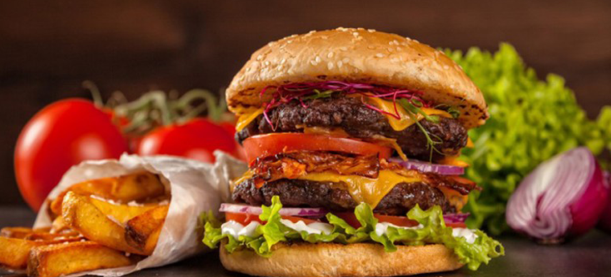

La hamburguesa es una de las creaciones gastronómicas más populares y deliciosas del mundo, sin mencionar que es sencilla de preparar en sus infinitas presentaciones, con queso con papas, con pepinos de la forma que se les pueda ocurrir. Debido a su popularidad, se creó el Día Internacional de la Hamburguesa.

Construir la hamburguesa perfecta que combine buen sabor y buen montaje es complicado, aunque si tienes un par de trucos profesionales, la cosa cambia.

Lo que principalmente marca la diferencia en una hamburguesa gourmet frente a una hamburguesa normal es esencialmente que el pan, la carne, los quesos y las salsas sean de alta calidad.
Si nos centramos en un negocio de restauración no hay gasto más variable que el de los productos que usamos en las elaboraciones que llevamos a cabo en el día a día. Es por todo esto por lo que debes cocinar con el corazón pero poniendo el corazón y, por supuesto, la cabeza en la cocina.